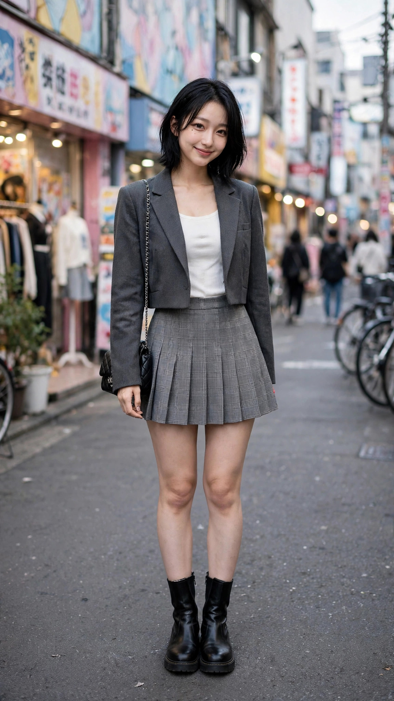

銀座のMiaはベージュのチェック柄プリーツミニ、原宿のモデルBはグレーのチェック柄プリーツミニ。同じプリーツミニのチェックでも、ベースの色で甘さの量が変わります。
ベージュチェックは白ジャケットと淡ピンクに馴染んで、甘さが前に出る方向。グレーチェックはチャコールのブレザーと合わせて、チェックの柄だけを効かせて甘さを引き算する方向です。チェック柄は「柄の大きさ」より「地の色」で印象が決まります。
Miaは骨格ウェーブ／ブルベ冬。ベージュはブルベ冬には黄みが気になる色ですが、顔から離れたボトムスで使う分には組み立てやすい置き方です。モデルBは骨格が未定（記録なし）／ブルベ冬で、グレーのような無彩色寄りの色が得意なタイプです。